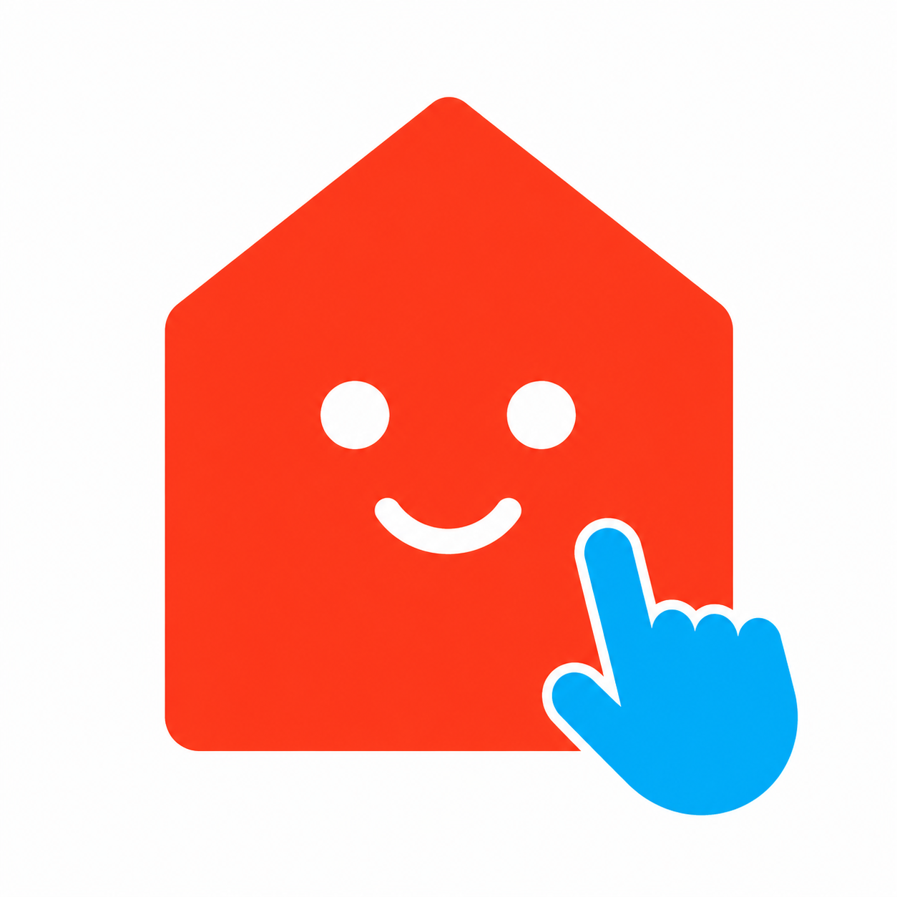

要収録
C01：1Fで一度だけ実編集
編集前・操作中・確定後を映像内で確認
C01：1Fで一度だけ実編集
編集前・操作中・確定後を映像内で確認
S01 / REAL EDIT
住まいは、一本の線から。
- 変化
- 壁または開口を一度だけ編集
- 方式
- 直接画面収録。生成UIは禁止
- 接続
- 編集線を2Fの主要線へ
32秒 / 16:9 / exact-first layered master
正確な製品映像だけで物語を完結させ、AIレンダーはv2正確性審査を通過した素材だけを品質向上層として扱う。
現行UI、正確な3D、座り視点、公式ロゴだけを建築上の基準にする。設計不一致の外観候補01〜04と旧玄関・LDK beauty画像は使用も参照もしない。
S03末尾とS04の最大2カットを、新しい正確な外観へ交換可能。各角度は元の3Dから独立生成し、生成画像を次角度の入力にしない。
